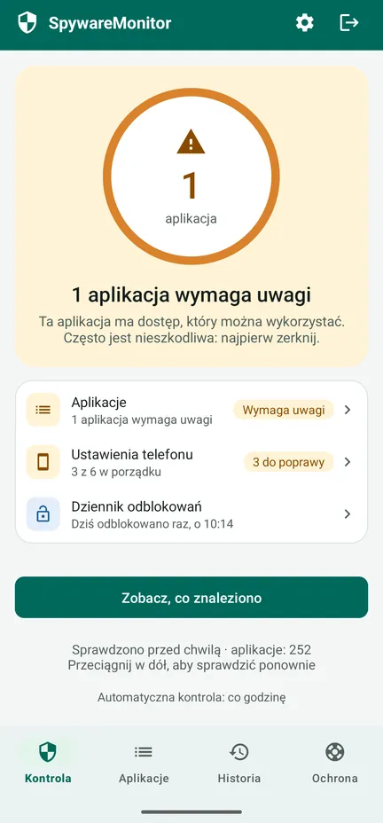
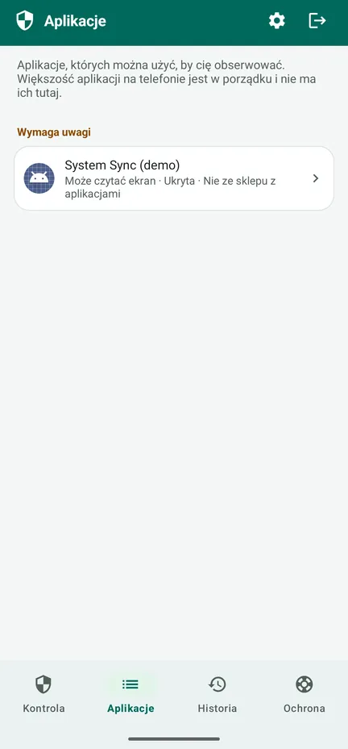
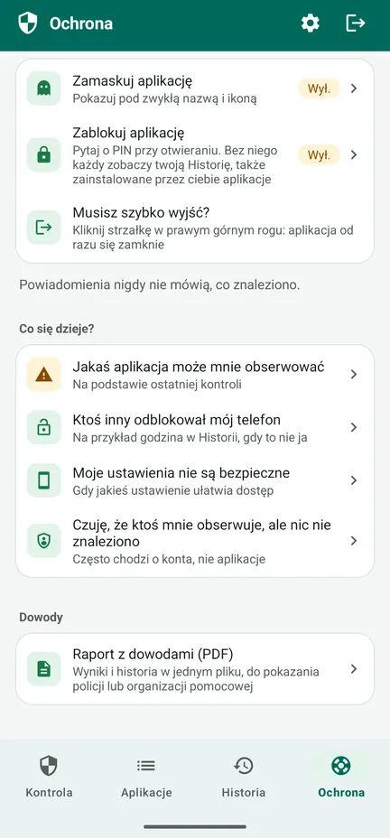
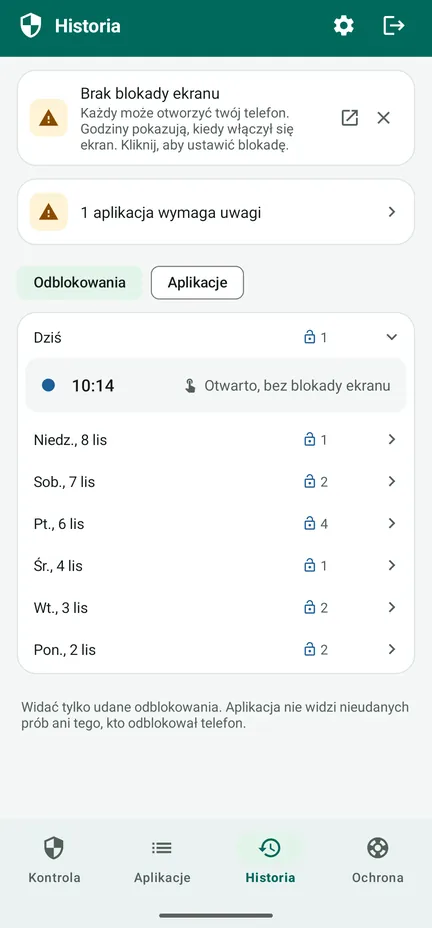

Czy ktoś obserwuje twój telefon?
SpywareMonitor sprawdza, których aplikacji na twoim telefonie z Androidem można użyć do szpiegowania cię – i prostym językiem wyjaśnia dlaczego.
Dla każdego, kto boi się, że partner, były partner lub ktoś inny potajemnie śledzi go przez telefon. Bez internetu, bez reklam, bez konta: nic nie opuszcza twojego telefonu.
Pobierz z Google Play Krok po kroku (po angielsku)
Bezpłatnie w Google Play na Androida 8 i nowsze, z opcjonalnym, jednorazowym zakupem wersji Pro. Aplikacja działa w 10 językach, także po polsku.

Znane stalkerware
132 aplikacje szpiegujące, rozpoznawane po nazwie i certyfikacie podpisu.
Ukryte aplikacje
Aplikacje bez ikony albo z nazwą, która udaje część Androida.
Aplikacje, które mogą obserwować
Aplikacje, które czytają ekran lub powiadomienia albo działają jako administrator urządzenia.
Ustawienia telefonu
Brak blokady ekranu, debugowanie USB i inne ustawienia, które ułatwiają dostęp do telefonu.
Bezpieczne kolejne kroki
Co zrobić i w jakiej kolejności, żeby nie zaalarmować drugiej osoby.
Nic nie opuszcza telefonu
Bez uprawnienia do internetu: bez reklam, bez śledzenia, bez konta.
Zobacz, jak to działa
Obejrzyj 83-sekundowy film (po angielsku) – jak aplikacja sprawdza telefon, co oznacza kolor pomarańczowy i czerwony i co zrobić dalej – albo przejrzyj ekrany. Obejrzyj na YouTube



Bezpłatnie: kontrola
- Sprawdza każdą aplikację i porównuje je z listą znanego stalkerware
- Pomarańczowy: dostęp, który można wykorzystać – często nieszkodliwy, więc najpierw zerknij. Czerwony: znane oprogramowanie szpiegujące.
- Powody przy każdej aplikacji i informacja, kto ją stworzył
- Ustawienia telefonu, każde z przyciskiem, który pomaga je poprawić
- Karta Ochrona: kroki dla twojej sytuacji, w bezpiecznej kolejności
- Szybkie wyjście: strzałka w prawym górnym rogu od razu zamyka aplikację
Pro: jedna płatność, bez subskrypcji
- Sprawdzaj automatycznie co godzinę, jednym przełącznikiem. Powiadomienie nigdy nie mówi, co znaleziono – pokazuje tylko nazwę aplikacji i „Kliknij, aby otworzyć” – i może poczekać godzinę.
- Dziennik odblokowań: kiedy telefon był odblokowany, żebyś zauważył(a), czy ktoś go używał
- Historia: kiedy która aplikacja została zainstalowana, dostała dostęp lub została usunięta
- Raport z dowodami (PDF) w języku aplikacji, do pokazania policji lub organizacji pomocowej
- Maskowanie i blokada: pokazuj aplikację jako Notatki, Pogodę, Przepisy lub Planer i otwieraj ją PIN-em lub odciskiem palca
Historia jest zapisywana już w wersji bezpłatnej. Potwierdzenie zakupu od Google wysłane e-mailem i historia zamówień w Google Play podają nazwę aplikacji.
Zalecana konfiguracja: chroń aplikację w 5 krokach (po angielsku)
Zanim cokolwiek usuniesz
- Usunięcie aplikacji szpiegującej może zaalarmować osobę, która ją zainstalowała. Najpierw pomyśl o swoim bezpieczeństwie.
- Zachowaj dowody: raport z dowodami, zrzuty ekranu albo zdjęcia zrobione innym telefonem.
- Porozmawiaj z kimś zaufanym, z policją lub z telefonem zaufania – najlepiej z telefonu, który nie jest obserwowany. W większości krajów działa bezpłatny telefon zaufania dla osób doświadczających przemocy.
- Zmień ważne hasła z innego urządzenia.
- Jeśli grozi ci bezpośrednie niebezpieczeństwo, zadzwoń pod lokalny numer alarmowy.
Karta Ochrona w aplikacji przeprowadzi cię przez to krok po kroku, zależnie od twojej sytuacji. Przeczytaj, co zrobić, gdy coś zostanie znalezione (po angielsku), a najpierw zabezpiecz samą aplikację (po angielsku): zamaskuj ją i zablokuj PIN-em.
Szczegóły
Wszystko, co sprawdza
- 132 znane aplikacje typu stalkerware (nazwa i certyfikat podpisu)
- Aplikacje bez ikony na liście aplikacji
- Ułatwienia dostępu, dostęp do powiadomień i administratora urządzenia
- Aplikacje zainstalowane z pliku lub z innego źródła zamiast ze sklepu z aplikacjami
- Ryzykowne połączenia, np. lokalizacja w tle razem z mikrofonem i SMS-ami
- Blokada ekranu, debugowanie USB, opcje programisty, aplikacje, które mogą instalować inne aplikacje, telefon zarządzany przez kogoś innego
- Oznaki rootowania telefonu – pokazywane tylko wtedy, gdy zostaną znalezione
Prywatność, którą możesz sprawdzić
SpywareMonitor nie ma uprawnienia do internetu, więc nie może nigdzie niczego wysłać. Jego dane nie trafiają do kopii zapasowej w chmurze. Lista znanego stalkerware jest wbudowana w aplikację i aktualizowana razem z nią. Polityka prywatności (po angielsku).
Uczciwie o ograniczeniach
Żaden skaner nie da 100% pewności, że telefon jest czysty. Aplikacji w profilu służbowym ani oprogramowania szpiegującego na telefonie z dobrze ukrytym rootowaniem nie zobaczy żadna zwykła aplikacja. SpywareMonitor powie ci, jeśli znajdzie oznaki rootowania. Śledzić można cię także przez konta, bez żadnej aplikacji.
Języki i telefony
10 języków: polski, angielski, norweski, niderlandzki, niemiecki, francuski, hiszpański, chiński, hindi i arabski. Android 8 i nowsze.
Najczęściej zadawane pytania
Jak sprawdzić, czy na moim telefonie z Androidem jest aplikacja szpiegująca?
Zwróć uwagę na nieznane ci aplikacje, które są ukryte na liście aplikacji, mogą czytać ekran (ułatwienia dostępu) lub powiadomienia, działają jako administrator urządzenia albo zostały zainstalowane z pliku zamiast ze Sklepu Play. SpywareMonitor sprawdza to wszystko i porównuje twoje aplikacje z listą 132 znanych aplikacji typu stalkerware.
Czy SpywareMonitor gdzieś wysyła moje dane?
Nie. Aplikacja nie ma uprawnienia do internetu, więc nic nie może opuścić twojego telefonu. Bez konta, bez reklam i bez analityki.
Czy od razu usunąć aplikację szpiegującą?
Usunięcie jej może zaalarmować osobę, która ją zainstalowała. Najpierw pomyśl o swoim bezpieczeństwie, zachowaj dowody i porozmawiaj z kimś zaufanym, z policją lub z telefonem zaufania – najlepiej z telefonu, który nie jest obserwowany.
Czy SpywareMonitor wykryje każde oprogramowanie szpiegujące?
Żaden skaner nie może tego obiecać. Aplikacji w profilu służbowym ani oprogramowania szpiegującego na zrootowanym telefonie nie zobaczy żadna zwykła aplikacja. SpywareMonitor mówi o tym otwarcie i pokazuje, co może sprawdzić.
Czy SpywareMonitor jest bezpłatny?
Kontrola, ustawienia telefonu i kroki bezpieczeństwa są bezpłatne. Pro to jedna płatność, bez subskrypcji. Dodaje automatyczne kontrole z dyskretnymi powiadomieniami, Historię, dziennik odblokowań, raport z dowodami w PDF oraz maskowanie i blokadę aplikacji PIN-em.
Czy mogę ukryć SpywareMonitor na telefonie?
W wersji Pro możesz zamaskować aplikację jako Notatki, Pogodę, Przepisy lub Planer i zablokować ją PIN-em. Powiadomienia nigdy nie mówią, co znaleziono. Strzałka w prawym górnym rogu od razu zamyka aplikację. Potwierdzenie zakupu od Google wysłane e-mailem i historia zamówień w Google Play podają jednak nazwę aplikacji.
Czuję, że ktoś mnie obserwuje, ale nic nie znaleziono. Co teraz?
Śledzenie często odbywa się przez konta, a nie aplikacje. Wyłącz udostępnianie lokalizacji w Mapach Google, sprawdź urządzenia na koncie Google oraz pomocniczy adres e-mail i numer telefonu, a także poszukaj ukrytego lokalizatora. Zmiany na koncie wprowadzaj z innego urządzenia. Więcej w pomocy (po angielsku).
Poradniki: oprogramowanie szpiegujące na Androidzie (po angielsku)
Pomoc krok po kroku (po angielsku)
Więcej aplikacji od Nordic Appworks
UpdateMonitor — historia każdej aktualizacji, instalacji i usunięcia aplikacji na telefonie, ze zmianami uprawnień. RebootMonitor — kiedy telefon był ostatnio uruchamiany ponownie. Tak jak SpywareMonitor: bez internetu i bez reklam.
Kontakt
Pytania lub uwagi: support@spywaremonitor.app
Lista znanego stalkerware pochodzi ze wskaźników stalkerware od Echap, na licencji CC BY 4.0.